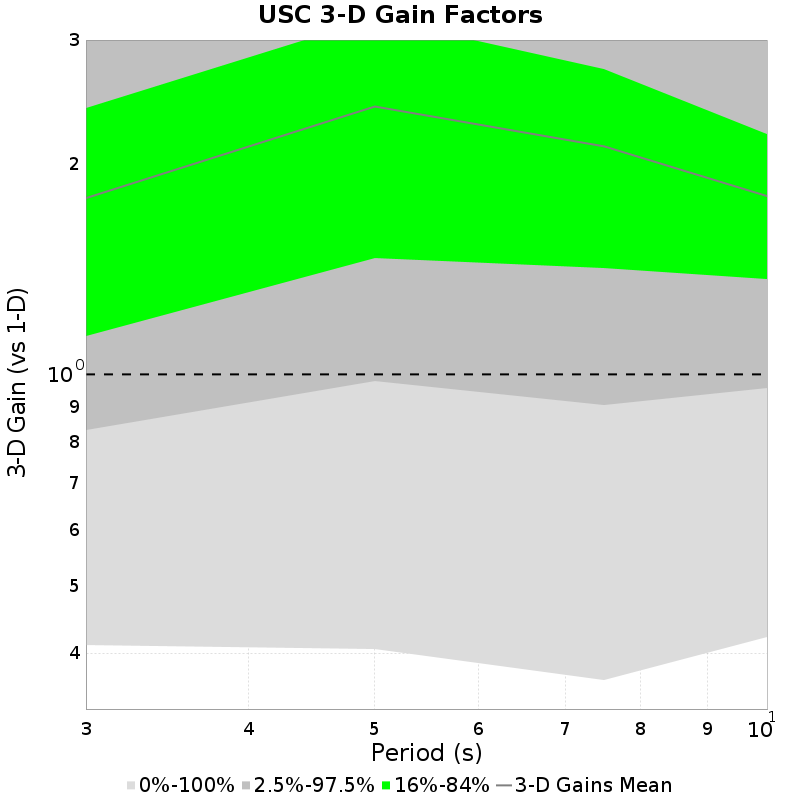
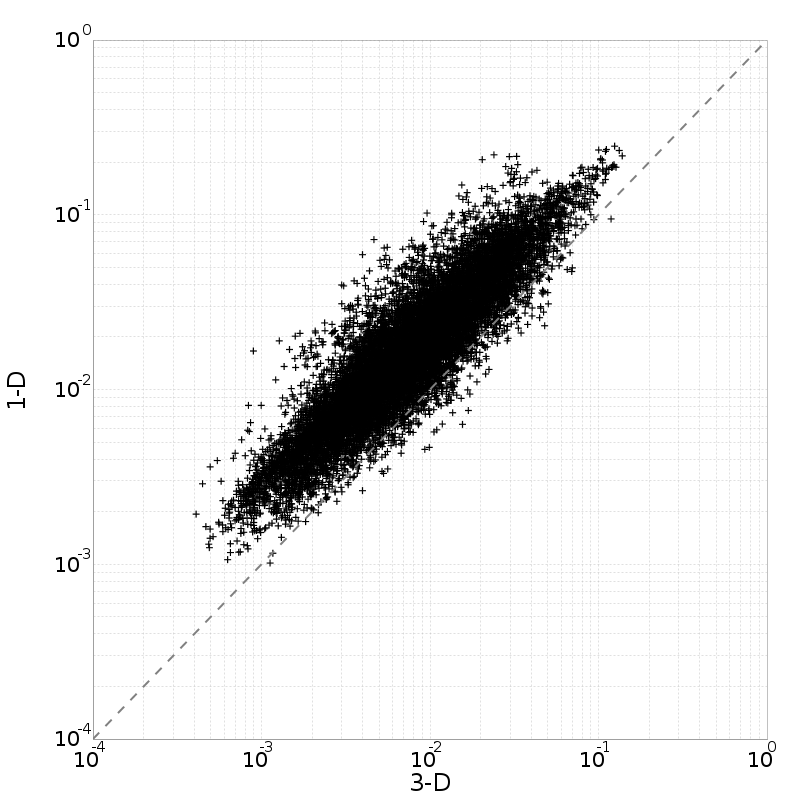
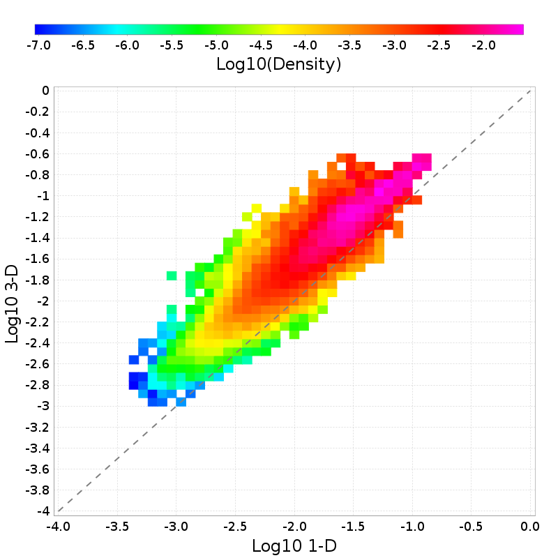
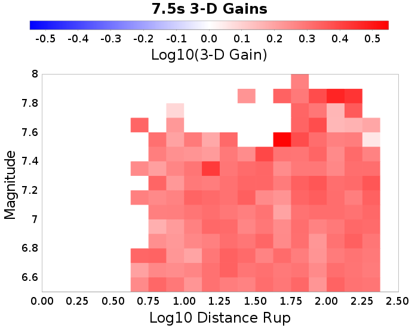

3-D vs 1-D Comparisons
3-D Model: RSQSim 4841
1-D Model: RSQSim-BBP (Vs30=500 m/s)
Table Of Contents
3-D vs 1-D Comparisons
USC
USC 3-D Gain Spectra
USC Scatter Plots
USC 3-D Mag/Distance Gain Plots
USC
(top)
Name
USC
Latitude
34.0192
Longitude
-118.286
Site Parameters
Vs30
(
m/sec
)
500.0
Depth 1.0 km/sec
(
m
)
580.0
Depth 2.5 km/sec
(
km
)
4.1
USC 3-D Gain Spectra
(top)

USC Scatter Plots
(top)
3s
5s
7.5s
10s


USC 3-D Mag/Distance Gain Plots
(top)
3s
5s
7.5s
10s
